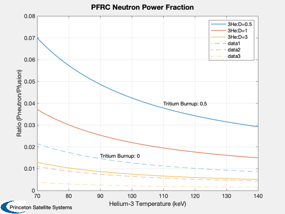

Ratio of neutron power to fusion power
For PFRC parameters: Te = 30 keV, Td = 70 keV, and T(he3) ranges from 70 to 140 keV. The tritium burn-up factor is nominally 0.5. The results are consistent with Figure 3 in Santarius.
%-------------------------------------------------------------------------- % See Also: PowerDHe3 %-------------------------------------------------------------------------- %-------------------------------------------------------------------------- % Reference: Santarius, J.F. and B.G. Logan, "Generic Magnetic Fusion % Rocket", UWFDM-914, University of Wisconsin, February 1998. %-------------------------------------------------------------------------- % Tritium burnup of 50% d5 = PowerDHe3; d5.tD = 70; d5.tE = 30; d5.fT = 0.5; d5.nD = 1e20; % Tritium burn-up of 0 (all exhausted before it can fuse) d0 = d5; d0.fT = 0; The = linspace(70,140); ratio0 = []; ratio5 = []; % Ratio D-3He of 2:1 d5.nHe3 = 0.5e20; d0.nHe3 = d5.nHe3; for k = 1:length(The) d5.tHe3 = The(k); [pF, pN] = PowerDHe3( d5 ); ratio5(1,k) = pN/pF; d0.tHe3 = The(k); [pF, pN] = PowerDHe3( d0 ); ratio0(1,k) = pN/pF; end % Equal ratio D-3He d5.nHe3 = 1e20; d0.nHe3 = d5.nHe3; for k = 1:length(The) d5.tHe3 = The(k); [pF, pN] = PowerDHe3( d5 ); ratio5(2,k) = pN/pF; d0.tHe3 = The(k); [pF, pN] = PowerDHe3( d0 ); ratio0(2,k) = pN/pF; end % Ratio D-3He of 1:3 d5.nHe3 = 3e20; d0.nHe3 = d5.nHe3; for k = 1:length(The) d5.tHe3 = The(k); [pF, pN] = PowerDHe3( d5 ); ratio5(3,k) = pN/pF; d0.tHe3 = The(k); [pF, pN] = PowerDHe3( d0 ); ratio0(3,k) = pN/pF; end Plot2D(The,ratio5,'Helium-3 Temperature (keV)','Ratio (Pneutron/Pfusion)','PFRC Neutron Power Fraction') legend('3He:D=0.5','3He:D=1','3He:D=3') hold on colors = get(gca,'colororder'); plot(The,ratio0(1,:),'--','color',colors(1,:)) plot(The,ratio0(2,:),'--','color',colors(2,:)) plot(The,ratio0(3,:),'--','color',colors(3,:)) text(110, 0.04, 'Tritium Burnup: 0.5') text(90, 0.016, 'Tritium Burnup: 0') % All D-D d5.nD = 1e20; d5.nHe3 = 0; [pF, pN] = PowerDHe3( d5 ); ratioDD = pN/pF; disp('For an ion temperature of 70 keV and tritium burnup of 0.5:') fprintf('\t3He/D of 0.5: %f\n',ratio5(1,1)) fprintf('\t3He/D of 1: %f\n',ratio5(2,1)) fprintf('\t3He/D of 3: %f\n',ratio5(3,1)) fprintf('\tD-D:\t %f\n',ratioDD) disp('(Compare against figure in Santarius)') %--------------------------------------
For an ion temperature of 70 keV and tritium burnup of 0.5: 3He/D of 0.5: 0.070019 3He/D of 1: 0.037197 3He/D of 3: 0.012938 D-D: 0.595197 (Compare against figure in Santarius)